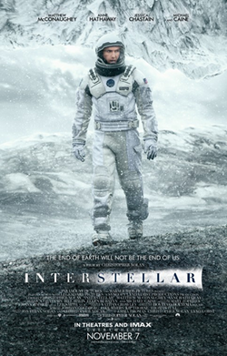

Num futuro próximo, a Terra enfrenta uma crise alimentar devastadora que ameaça a extinção da humanidade. Para tentar salvar a espécie humana, um grupo de astronautas e cientistas embarca numa missão espacial através de um buraco de minhoca (Wormhole) perto de Saturno, na esperança de encontrar um novo planeta habitável noutra galáxia.
Realizado por Christopher Nolan, Interstellar destaca-se pelo seu impressionante rigor científico, desenvolvido em colaboração com o físico Kip Thorne (Prémio Nobel da Física). A representação visual do buraco negro Gargantua e a monumental banda sonora composta por Hans Zimmer tornam este filme uma obra prima de ficção científica. (a sério, o filme é mesmo muito bom)